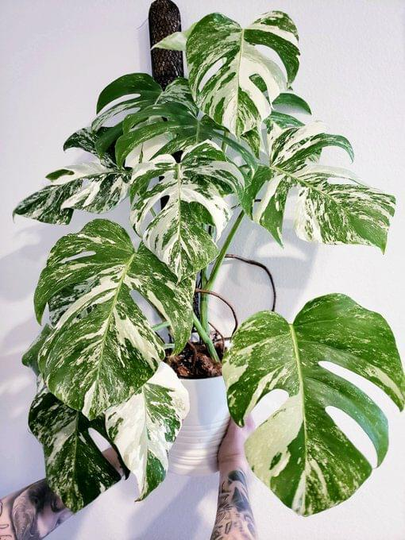
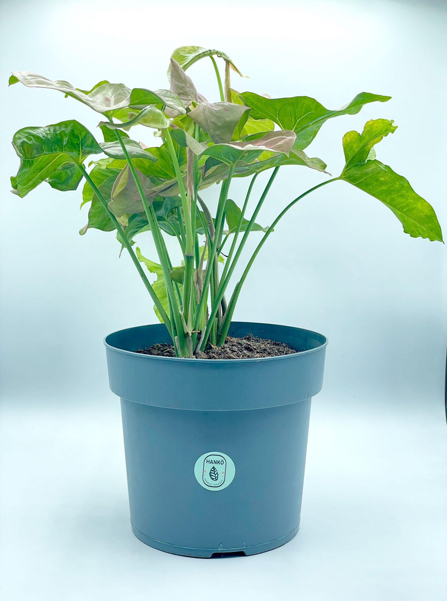
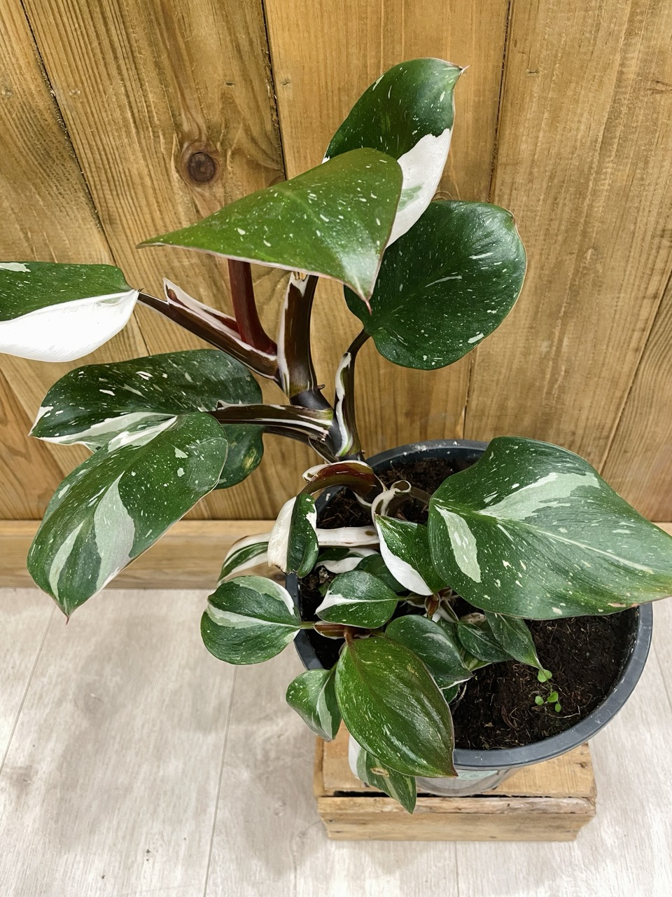

Pendant mon temps libre, j'aime prendre soin et lire sur les plantes d'intérieur exotiques, surtout sur leurs modifications génétiques et leurs variégations.
Si vous ne savez pas ce qu'est une plante variée, regardez la vidéo ci-dessous :
|  | Monstera Albo Variegata est originaire des forêts tropicales d'Amérique centrale. Cette variété, très recherchée des collectionneurs, se distingue par son feuillage panaché. Prix: 20€-30€ / 1 feuille |
|  | Syngonium Pink Candy Syngonium podophyllum 'Candy' is a dwarf version of the Syngonium Butterfly plant or Arrowhead Plant and is a member of the Araceae family. Prix: 40€ / 1 plant |
|  | Philodendron White Knight C’est une vraie warrior : elle n’est ni gourmande en eau, ni en lumière, et développe quand même de grandes feuilles brillantes verte claire tâchetées de blanc et ses tiges rouges foncées avec des variégations. Prix: 33€ / pot de 2 litres |
Je ne suis pas une randonneuse professionnelle, mais j'aime me promener dans les forêts et les montagnes.
J'aime jouer aux cartes et aux jeux de société, ce sont mes préférés:
Je ne suis pas un joueur de haut niveau, mais j'aime me détendre et rechercher le confort (ou l'inverse - l'adrénaline) dans la réalité virtuelle des jeux:
Ce sont mes préférés:
The game is developed and published by a single person, Zeekerss. The music is also composed by the sole developer of the game, who plays various instruments such as guitar, piano, and drums.
Stardew Valley is a testament to the remarkable achievements of a single individual: ConcernedApe aka Eric Barone. He dedicated over four years to developing, coding, and creating all the art for the game by himself before it launched.
The sequel's development started immediately after releasing Fallout 3 with a dedicated team of just over 100 people. The amount of content that many people produced is a staggering achievement. The game only had one gun that could become any gun in the game before adding the others.